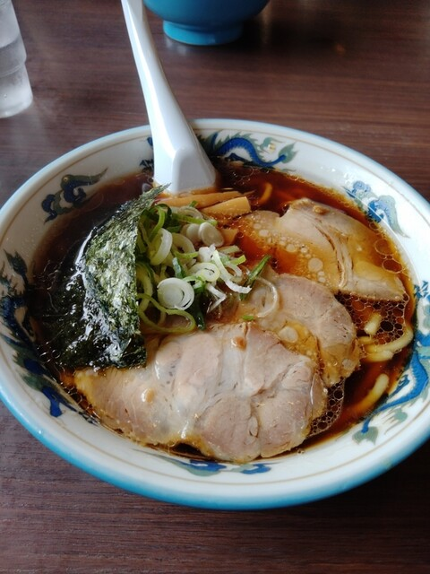

コシのある自家製手打ち太麺と、澄んだ醤油スープ。沼津市民に長く愛されるソウルフードです。

沼津ぐるめ街道沿いで、昼時には駐車場が満車になるほどの人気。地元のファミリーやサラリーマンに長く愛されてきました。
毎日打つ、コシともちもち感が自慢の太麺。スープによく絡みます。
あっさりながら旨みのある、昔ながらの醤油ラーメン。
昼時は地元客で大賑わい。チャーハン・餃子との相性も抜群。
沼津ぐるめ街道沿い、駐車場が満車になるほどの人気店。手打ちの太麺にたっぷりのチャーシュー。沼津の人なら誰もが知る一杯です。
お品書きを見る
国道246号・沼津インター方面のグルメ街道沿い。駐車場あり。
アクセス・店舗情報